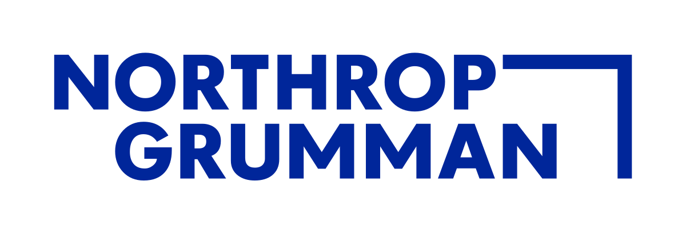

The Intelligence Optimization for Networks (ION) Lab.
The Intelligence Optimization for Networks (ION) Lab at Purdue University conducts research at the intersection of network science/optimization and machine learning.
This includes devising techniques for intelligence management in contemporary networked systems (i.e., networks for learning), and data-driven methodologies to optimize/defend how wireless networks operate (i.e., learning for networks).
ION produces methodologies spanning both communication network architectures (e.g., fog/edge computing, 5G/6G/NextG wireless, IoT) and certain social applications that run on top of these architectures (content delivery, online education, recommendation systems).
Most of our efforts include significant theoretical (e.g., convergence analysis) and experimental (e.g., evaluations on real-world datasets) components.
Recent Publications
View allSponsors
